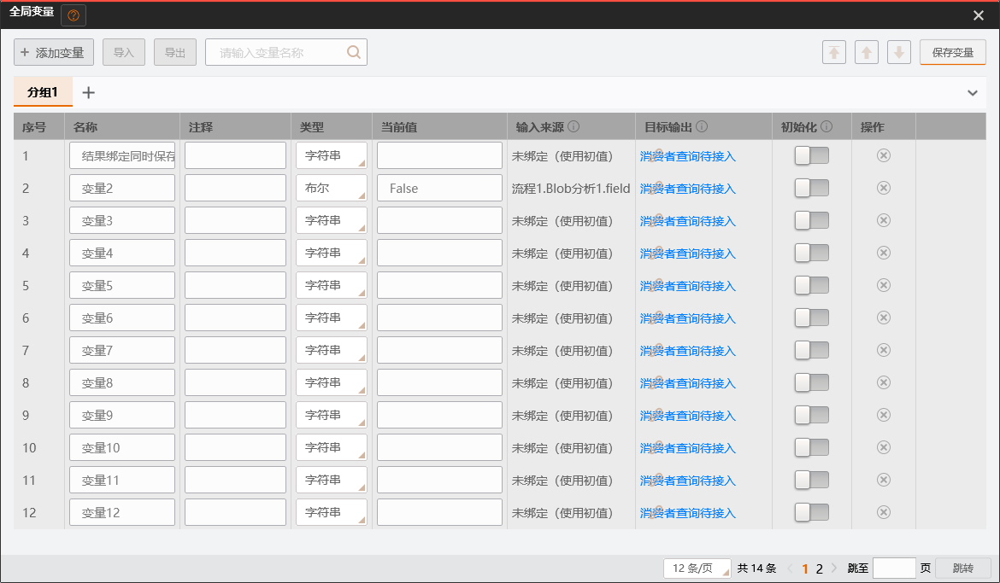
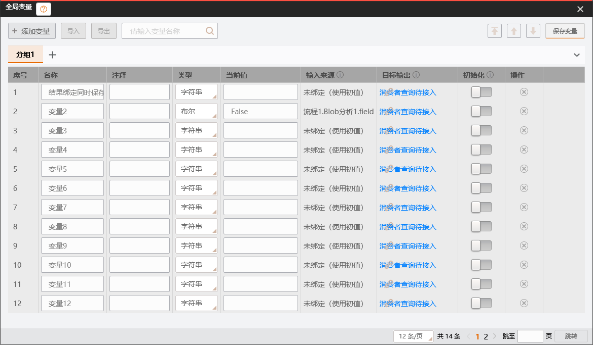

2026-11-04 · 精确基线 5bf65949e · 独立树 platform-variable-ui-design-20261104 · 分支 codex/platform-variable-ui-design-20261104。本批只读生产源码并维护设计，不修改产品、共享合同或测试，不启动原 SDK、不重新逐项取证。
参数引用和模块结果已经共用正式变量选择窗；管理器已有 Prepare→Commit→回执重基。不能把它们判为全旧链重写。管理器目前仍是自研 DataGrid/按钮组合，依赖 SDK 类型词汇、复杂值与图像转换器；数组详情、消费者查询和目标批量绑定尚未接通。复杂值合同由 C 设计、根冻结，本页只列能力需求，不以建议伪装已存在 ABI。流程局部变量缺少 scope/保存/执行基础，继续明确禁用。Group 不动。
| 入口 / 实际源位置 | 已有行为及差异 | 复用 / 调整 / 替换与完整出口 |
|---|---|---|
| 主窗全局变量 ShellMenuCatalog / ShellTopBarViewModel → MainWindowViewModel.ExecuteShowGlobalVariableManager | 同一实际 CurrentSession 构造 GlobalVariableManagerViewModel(session,isCurrent,canEdit)，登记参数窗；SaveRequested 回正式方案保存。isCurrent 是会话身份，运行门禁是独立 canEdit。已经退出旧 SolutionManager 模型；ServiceInitializer.SolutionManager 实为现行 manager 名称，不能因名字推定旧模型。 | 保留入口、唯一登记/保存/退休；换窗口内部原件视觉。CanEdit 必须覆盖单次/连续预约及宿主切换状态，短暂保存 Prepare 不得把参与者注销。重复打开现策略须保持并验证共享变量草稿冲突，不能增第二 Host。 |
| 管理器五文件 Features/GlobalVariableManager | 实际 Domain.GlobalVariable 私有草稿；分组、过滤、添加/删除、名称/备注/类型/初始化；文本缓冲、PrepareView、ViewStamp、Acknowledge 保留较新输入。视觉是自研 GvDataGrid* 样式、ThemeDialogWindow、emoji 操作按钮，无管理分页、排序和详情消费者。 | 替换窗口组合与视觉，复用正确事务、缓冲和草稿。原件列/分组/遮罩/菜单/按钮图标及排序入口逐一迁入 Plugin.Wpf；UI 仅装配，不复制 Domain 模型。失效、无效文本、分页虚拟化、回执间输入必须完整保留/拒绝。 |
| 管理器 SDK 余项 VM.TypeOptions、VariableGroupViewModel using；Dialog.xaml.cs 两 converter | SdkTypeVocabulary/TypeOption；OpenCvSharp.Mat、IVisionImage、AffineMatrix、RoiShape 及几何数组、BinaryPayload 类型判断。ParseText 按旧 token 仅解析一个值并包装数组，不能等同完整数组编辑；未知对象 ToString 可能掩盖未支持类型。 | 删除 SDK 视觉适配与类型分支，消费根冻结中立声明/格式能力。展示文本、编辑解析与绑定资格分开；不凭当前 Value CLR 类型定义声明。无能力明确只读/禁用和原因，不保回退 converter，不另造变量模型。 |
| 变量来源选择 GlobalVariableSelectionService.Choose | 已经使用 Plugin.Wpf.VariableSelectionDialog。CaptureDefinitions 与 actualCandidates 原实例求交，返回前检查 Session/实际成员/类型；仅 VariableValueDeclarations.TryGetPort 的纯值候选，资源/组合排除。当前返回 actual GlobalVariable，不是旧自研选择窗。 | 复用公共窗口与实际身份守卫；结果绑定需按真实目标声明预筛并在提交重新校验，不能把所有纯值列入就宣称兼容。候选快照不携资源。不得以旧同 ID 对象替换实际实例，改名只改显示。 |
| 节点输入/设置与索引 RuntimeNodeConfigurationControl.BindDraft → CaptureReferenceSelections → ReferenceCandidates/ReferenceFieldSession → ReferenceExpansionCoordinator | 已走实际 NodeDefinition/草稿与正式 schema；变量直接生成 VariableReference；AtVariable 与 All/静态/动态索引沿既有 BindingSelection，含 request/candidate/UI/acceptance 代次。Display 选择明确不返回变量。已复用公共选择/树/分页，不是待重画入口。 | 直接保留。根 Blob 同期独占该控件，后续只按冻结 ABI 适配声明/候选，不抢写；前后重新捕获资格，提交 ApplyFields/ValidateFieldProposals 经同一 candidate。保留索引多层/类型/存储/越界语义及回执后的原始输入，不新增索引规则。 |
| 模块结果 producer 绑定 ImageResultControl.EditResultVariable → MainWindowResultBindingEditing.TryEditResultVariable | 真实 FlatResultRow/endpoint/CurrentResultPublication 校验，公共变量选择；临时 BeginVariableEdit → ValidateEdit/CommitEdit。GlobalProducerBindingRules 限正式声明与 All，仅纯值，运行回写独立。候选现未按端口兼容性预筛；直接临时提交未参与其他窗口统一 Flush，须核合并冲突。 | 复用正式 producer 事务及 leased result。补只读兼容候选/原因，确认按同一 Editing 准备关联参与者、冻结后检查 publication/实际 flow/node/variable，再一次提案；不可清空已有管理器新输入或让临时草稿覆盖它。解除精确核当前 binding，取消无变更。跨根 producer 与消费者语义分别处理，不偷偷造执行边。 |
| 管理器输入来源 / 目标输出 | 输入来源仅 ProducerDisplayName 文本，提示去模块结果；目标列显示“消费者查询待接入”，OpenTargetParameterCommand 永 false。公共 TargetParameterSelectionDialog/Tree 已有，但UI无生产调用；类型筛选仍禁用，无法可靠筛出 DisplayType/ComType/订阅/占用。 | 来源展示可复用实际 producer；目标查询及选择需根提供候选只读信息/整批字段编辑能力（见下表）。窗口确认/删除先改私有选择，取消回原状态；确认对实际节点集合统一 Prepare/验证/提交，不能逐节点循环 Commit 或写 __GlobalVars__ 名称桥。 |
| 数组详情 / 分页 | 公共 VariableArrayDialog（默认40）及 VariablePageNavigator 已编译，UI 当前无消费；选择窗默认10已接。数组窗只接调用方文本快照，自己不持业务资源；PageNavigator 控件自身默认12不能覆盖两个宿主显式值。 | 原件详情按钮接现有 CaptureValue/冻结中立值；纯值数组可先实现同组批次。数组窗40、选择窗10；管理器原件分页或滚动按原证迁，不偷套10。图像/几何不伪造数组文本编辑器；等待资源/专属呈现资格，逐项明确。 |
| 流程变量 ShellWorkspaceControl.xaml 流程菜单 | “流程变量（待完善）”禁用；当前 CaptureReferenceSelections/Domain 只有方案全局变量，不能用 Group 字段冒充根局部 scope。 | 保入口禁用和明确说明；局部声明作用域、引用解析、复制/删除/Undo、保存/运行快照均缺共同合同。只列后续完整需求，不在UI造局部字典、不把全局窗口换标题当完成。 |
| 导入/导出 / 通信变量选择 | 管理器 Import/Export 永 false，原因分别事务/资源与原子写；通信服务独立只接部分纯值，属于旧 SDK 退出相关消费者，不能随窗口重构改变其协议。 | 不实现原 .gvar 兼容。产品 VariableArchive 新V2冻结后方接实际文件选择→完整解码候选→一次编辑→失败保源；导出捕获时状态、取消释放，不改变方案clean。通信 UI/值消费只列跨模块适配边界，由根统一派工。 |
复用原整体方案、逆向计划与五原件静态目录。旧页的 Workflow/SDK 位置与历史“实施中”描述保留作阶段证据，当前权威对应以本页5bf盘点为准，不能照旧页恢复已退出模型。既有 B-global-module-review-batch13、B-selection-complete-gate-batch16、B01-selection-batch2、B05-gvar-preflight-batch7 与 batch25 身份材料只复用，不逐项重启逆向。
| 原件 / 固定XAML SHA-256 | 完整依赖与迁移出口 |
|---|---|
GlobalVariableDialog17fd6594d9b0e5a893075d9ebf54d4abdf7f79ea9731168751d2fd9366354163 | 46命名元素、18显式事件、110资源引用起点。gridGlob/varDataGrid/tabControl/SearchText、btnUp/Down/Top、导入导出popup、Com/初始化列、windowShadow；递归核 DataGrid/Tab/ItemsControl/TextBox/Combo/Scrollbar/ButtonStyle、主题和语言键、空态/禁用/悬停图标、父级运行遮罩、动态列与滚动、ValueChanged/弱事件/Closing。现pending原件只作源证，不直接激活其SDK代码。 |
GlobalVariableSelectDlg023a989c41abbf8ce85e4e4dc28f23ca39c13133a96d60a8b81ce58945b95818 | VariableSelectionDialog + GroupSelector/Tree + VariableSelectionStyles + Native滚动/按钮/语言/分页图标；搜索、组、分页、选中/双击/确认/取消，10条默认与关闭快照释放。实际业务候选由宿主提供，不能搬原SDK全局服务。 |
RunParamsSelectWindowf99b004f646176d08872c84f2c6a35d53e147d39b7c3975cc2755827740de1aa | TargetParameterSelectionDialog/Tree、SelectedConsumers、树滚轮/双击、checkbox style、SourceScrollBars/ComboBoxes/BottomCommands/VariableSelectionStyles；原 DisplayType/ComType/订阅/占用过滤、保旧快照、移除/确认/取消、窗关闭事件。控件目前加载测试是模板验证，不是目标事务已通。 |
ArrayDisplayWindow8e422f94e1f1f0a76094f4add0f6eb6a43d8f8c3999fdb7902088c14d7767487 | VariableArrayDialog/BaseWindow、40条与更新重建页、Index/Value行模板、空数组/末页/页大小、主题资源和Closed。资源值需要读取时另持租约，不能直接ToString或借用已释放reader。 |
PageNumControl59cd28f6c897f69651629d7a6c46612fea1317770687a100a98421f60fb60afd | VariablePageNavigator/PageSizeOption/PageNumberItem、GroupRenameTextBox、首末/上下一页/页码/跳转/下拉，pagination资源及触发器。DP默认与每个宿主值区分，过滤/组切换重置，末页删除裁剪；事件退订与虚拟化按实际控件核。 |
上述SHA是已有反编译XAML身份，不是安装DLL/MVID。当前活动源、XAML命名元素/直接字典/绑定及 SHA 见5bf源码及XAML直接依赖清单。清单是审计入口，不冒充递归资源审查完成；实施批应逐资源核活动对应并保存原/迁移控件两主题截图。框架类型当前已中立命名，后续不得恢复VM/Apps.Style产品URI或别名。
锁序：UI与窗口操作仅owner线程；先捕获/验证会话声明，锁外构造控件、格式化文本和调用插件；不在ValueGate/Session锁内调用WPF、文件对话框或未知回调。沿既有CaptureValues/CaptureDefinitions/Editing锁序，资源Reader Acquire/Dispose与UI寿命明确，不为本批加全局锁或登记表。
| 能力及必需信息 | 现有可用 / 准确缺口 / 所有者 |
|---|---|
| 变量类型目录 | 复用Contracts.VariableValueDeclarations/TypeRef/Port；UI需显示名、持久token、shape/storage、可声明null/非空编码/文本编辑/绑定资格及禁用原因。不能由SdkTypeVocabulary/GetType猜测；C设计、根冻结后UI消费，不能提前写新TypeOption业务模型。 |
| 复杂值与读取寿命 | C明确沿用InputValues/RecordValue/SequenceValue、GlobalVariableValueSnapshot；Binary、六元素矩阵、七ROI+四样式、六种8/16位StoredRaster待根同批。UI只需冻结只读说明及按实际异步读取获取/释放reader，格式/布局/asset退役/取消排空规则；不建VariableValue或同义snapshot，不把保存能力等同运行绑定。C在途HTML旧factory段不可按其直接造接口。 |
| 目标消费者查询 | 需实际Session/flow/node/字段身份与代次、字段显示路径、Port/EditModes/当前Setting/转换/索引策略、可被当前变量赋值及原因、当前占用/订阅与旧选择。CaptureReferenceSelections是从目标字段正向查源，不是反向消费者目录；须根确认可复用schema与现compiler的最小受控查询，不能UI反查插件directory或硬编码ComType。 |
| 目标多节点一次编辑 | NodeConfigurationEditHost/ApplyFields/ValidateFieldProposals与统一DocumentEditProposal已有。仍需根确认从实际字段候选到同一次准备的参与者冲突/ownership及consumer摘要出口；不用Domain.ConsumerBinding旧字段或SDK名称桥代替实际VariableSetting。删除变量导致引用未解决必须拒整个候选或同提案显式重绑，不能静默置空。 |
| 顺序 / 分组 / 初始化 | 现变量Index/Group/IsInitialized可入草稿；排序应把正式顺序/Index变更纳同一提交并保存/Undo，不能只Move CurrentVariables。空组持久无现有实体，先记录限制交根裁决，不能新造组表。初始化受当前执行语义约束，不因原开关存在就赋新运行含义。 |
| 结果绑定资格 | 现compiler和GlobalProducerBindingRules负责最终声明/All/storage校验。UI需只读候选资格与原因，弹窗前后核row/publication/实际对象；若暂缺查询，只能明确提示最终校验失败，不宣称全候选可绑。拓展资源/ROI/动态索引须等共同合同，不越权拓展。 |
| 文件 / 流程局部变量 | 变量档案V2、方案V5由根统一版本并严格拒旧，无.gvar兼容。局部scope完全属于后续共享批，含根复制/删除/Undo/跨flow访问、引用编译/运行快照/持久化；流程菜单继续占位，不能从全局Group模拟。 |
集中交根的缺口仅此七组；原件目标DisplayType/ComType/动态IO与本方正式字段对应、管理器运行值报告防反馈/排序精确交互如已有材料仍无决定性证据，由根去重集中补证。其余原件资源和已成立的纯值链不因该缺口停止。没有重新运行原件、没有请求扩大硬件权限。
| 批次 | 写域与顺序 |
|---|---|
| 根冻结共享合同 | C复杂值设计→根Contracts/Domain/Application/Persistence唯一落地，冻结声明/资源/档案/回执 ABI；明确consumer查询与目标候选。UI不先造接口。当前设计交付可独立审定，不要求先迁全工具。 |
| 公共控件完整组合 | Plugin.Wpf/Controls/References/Variables、Themes/References及真正递归依赖；新增管理器视觉壳沿pending原件逐项迁移，五组件同版；Native源证不直接变产品SDK依赖。由根另指定唯一写者，不能撞Blob公共控件线。保持可脱主程序独立设计数据，使用同组装链。 |
| 宿主完整接入 | UI/Features/GlobalVariableManager五文件；MainWindowViewModel变量职责、MainWindowProductionEditing/MainWindowResultBindingEditing；ImageResultControl对应producer消费。RuntimeNodeConfigurationControl/ProductionEditorContext由根Blob线唯一适配，UI线给需求不并写。Shell流程菜单只维护明确未实现原因。 |
| 跨模块闭包 | MainWindowDocumentFiles codec、通信变量选择/值、Domain/档案converter与旧SDK最终退出由根统一分工。此设计不修改App、工具或采集。所有旧窗/converter实际消费者迁完才删除，不保兼容桥。 |
| 测试与证据 | Variables.Wpf.Tests复用控件组合；UI.Tests/Session/SourceAndVariablesSessionTests扩实际Session闭环；ShutdownLifecycleProbe加真实主窗入口/子窗/切方案及取消；Execution/Persistence合同用例由共享写者维护。只读设计本次不执行编译，也不把已有旧候选测试数当此方案通过。 |
| 链 | 成功 / 反例 / 生命周期 |
|---|---|
| 管理器视觉与组/页/排序 | 原件命名元素、事件、继承方法、模板/资源/图标、空态/父遮罩逐项对照；深浅主题真实主窗打开及独立同视图设计数据；多组/过滤/末页/空组/排序→保存重开/Undo顺序；未支持空组持久单列。不以DataGrid行数通过代替原件外观。 |
| 文本/类型/值 | 逐声明类型标量/空/null/序列；非法数字/非有限/超范围、重复名、类型改变/初始化；焦点/切页/重绑保原文本；Prepare后输入→receipt重基→再次提交保较新输入；无效输入阻止保存/运行并可恢复。 |
| 选择与索引 | 原默认10与40分别验证、搜索/双击/确认/取消/末页刷新；实际变量删除/同ID替身/类型变更/切Session/Undo代次旧请求拒回写；All/静态/变量索引、嵌套与storage不匹配沿现compiler；Display仍不接变量。 |
| producer / consumer | 实际ImageLoad→Blob声明结果绑定纯值、解除、类型不匹配及过期row拒绝；同次管理器pending参与者不被绕过；目标多字段候选确认一次history、取消不动、任何一个无效整批不写；删除变量仍有引用拒或同提案完整重绑；根/节点复制与删除Undo保持引用/旧scope退休。 |
| 复杂值/资源/档案 | 按根冻结类型列表逐项区分可保存/可编辑/可运行/可绑定；源数组修改不改快照；reader持有时切方案/关闭等待正确owner；坏资产/未知token/旧V4或旧档案失败保源；SaveCopy不clean、保存失败脏状态保留；导入全部校验后一次提交。待合同实施才有该出口，当前未通过。 |
| 运行/退出 | 单次及连续预约编辑禁用但参与者仍有效；运行值报告不覆盖手工缓冲/不变dirty；停止取消后恢复；参数窗/数组/选择/目标窗在切方案、目录退役、节点删除、关闭取消/重试时全退订/排空；无Dispatcher/OLE/reader泄漏。 |
| 缺基础范围 | 局部流程变量、原gvar/远程服务与未冻结复杂运行绑定继续准确保护；记未实现及接入点，不计完成。用户人工、物理原件差分、VS实际设计器、真实硬件与主线集成分别记录。 |
完成：固定5bf只读盘点、逐入口行为/差异/决策/出口、源码和直接XAML依赖SHA清单、原五组件证据复用、复杂值需求和文件所有权、完整实施与验收矩阵。未做：产品/测试修改、编译运行、SDK/硬件启动、原件动态补证、实际设计器/人工与主线集成。没有将原框架31类、变量窗口数或测试数当范围缩减。
复用原主方案作为导航入口，本页作为2026-11-04现行Session适配补充；旧证据保留。原76/W01–W05/全平台清单继续，Group/新循环暂停。本批下一步由根审定能力边界和唯一写者，再沿固定ABI成片实施；当前HTML不构成共享接口变更。
本批从ded0f48f2独立树实施，根批准C463ca51d6六测试原字节作为联编前置，不纳视觉提交。公共VariableManagerView直接迁原完整Grid、Tab/头部重命名、九列、顶栏导入/导出popup、搜索、上移/下移/置顶、页脚；沿已迁VariableManagerStyles、GroupRenameTextBox、SuperImageButton、FouerColorBorder、BaseWindow、Native本地化/组合资源，不保旧自研Gv样式/emoji窗口回退。原件样式的固定浅色客户区保持，双主题标题和宿主资源切换分别检查，不自行重画暗色DataGrid。
| 原件元素 / 事件 | 当前适配与寿命 |
|---|---|
| source/gridGlob/varDataGrid/tabControl/ComContent/subComContent；搜索/组/排序 | 公共纯视图只转EditorAction，不依Domain/UI/App；宿主实际草稿投影、12条分页/名称区分大小写搜索；AddGroup原图按钮在header溢出时移动同一实例。原SwapIndex为组内相邻槽互换；SetHeadIndex按原代码全局区间递增（包括其它分组）并置当前组首位，不用仅组内列表Move替代。Index进统一草稿/历史，不改变变量ID及引用。 |
| 名称/值Loaded、TextChanged、LostFocus、PreviewKeyDown与虚拟化 | 原始文本保留在宿主按实际草稿ID的缓冲；非法输入跨过滤/分页不丢；统一Prepare先验证再Flush，Acknowledge只确认准备时文本，较新输入重基后继续提交。原件值详情保留ShowDialog语义，纯数组冻结为字符串快照/40条分页，owner关闭退役子窗及事件。选择窗10、管理12独立，不泛套控件DP默认值。 |
| windowShadow / Running父状态 | 原异步SDK加载/导入/删组进度服务不搬入；现Session已加载，组草稿操作同步owner完成，文件入口禁用，无后台假进度。运行/切方案门禁独立于IsValid，DataGrid及操作命令禁编辑；不能为暂时忙状态注销参与者。运行值连续报告尚未映射到管理器只读显示，本批不把草稿值改成runtime来冒充用户编辑；此范围保留集中待办。 |
| dgComitColumn / CommInit | 发现现Domain.IsInitialized是运行状态，变量ConfigurationState/CandidateIdentity均未将它作为配置。本批退出旧自研TwoWay假编辑，保留原初始化开关但禁用并说明缺少初始化策略字段/执行语义。没有把运行状态另命名成配置，不改共享合同，不算初始化功能完成。 |
| targetText/linkButton、原帮助、PopImport/PopExport | 目标批量绑定尚无占用/订阅与实际待绑定字段的完整资格投影；现Host.BeginEdit可查schema并编译单字段，但反向已有选择、跨已登记参与者的目标编辑合并仍缺固定宿主组合，本批不根据Kind/名称猜。保入口原因，不新增公共基础。原帮助无本方内容、导入导出未原子接线均禁用，不恢复厂商原路径/gvar。 |
结果绑定修复：资格预筛走真实候选ValidateEdit；同一实际变量管理参与者复用Draft，Editing.Validate/Apply统一Flush其它参与者并一次history，失败只撤本操作未接受的producer，保用户原始文本。发现CanEditRootWorkspace会因变量窗自身登记及pending而关闭，结果使用独立操作门禁，仅排除正式运行/切方案/节点调试，允许同一变量窗编辑进入准备；根集合及画布门禁不变。ImageResultControl仅对应资格谓词和结果门禁两处同步。
单独设计时使用VariableManagerDesignData走同一公共视图，不实例化方案/算法，不复制业务默认值。VS实际设计器、原厂运行差分和人工验收仍单列。源字段捕获夹具dc36a49c4已固定供C联编：新ComplexVariableValueCodec及真实VariableVocabularyCapture，非完整视觉交付。
已成片迁公共原件管理视图、真实UI宿主、纯值原始输入、12条管理分页/40条数组详情、组名与组菜单、原件排序和唯一变量草稿/Prepare/回执/关闭；结果绑定实际资格预筛和统一Flush不再绕过管理器。该目录旧SDK/OpenCV复杂值分支、自研Gv样式和emoji窗口组合退出。原模板固定浅色客户区保持，未重画暗色表格。原始变量名/值与组名均覆盖准备后输入、回执重基和再次提交；复用菜单明确跟随实际PlacementTarget，旧组对象不能回写。
| 证据 | 结果及准确范围 |
|---|---|
| 正常完整ProjectReference Release | 最终build11：0错误/5990警告。C463六测试为经根授权联编前置，不纳视觉提交；未复制别树DLL/Release。 |
| 完整UI与最后增量 | build10同版完整UI231/231、0跳过；随后仅组原始文本/复用菜单增量，最终build11专项7/7、公共控件6/6（含独立同视图设计数据、无UI程序集依赖）通过。两版分别记录，不把231冒充最后增量后的完整232测试。 |
| 真实主窗/结果/文件/退出 | 实际主窗命令打开管理器，14条分页；正式Boolean输出绑定同时Flush待提交文本且仅一次history/receipt；实际HALCON运行发布值等于leased reader；真实ImageResultControl解除→公共选择窗资格过滤→重绑；V5保存重开后实际运行、根删除Undo、服务/插件/Dispatcher/OLE排空。最终日志无异常，独立隐藏桌面；不是物理用户操作。 |
| 失败保留 | 首次完整13错来自ded0退役codec/Binary测试前置，根准C463修正；自身probe补新codec。首次真实变量保存fixture空词汇拒String，dc36沿生产捕获实际词汇。早期图片无语言标签/组+，已复用本地化和实际header资源；旧结果门禁把变量窗自身拒绝，已分离实际操作门禁。独立公共视图首次测试误加载UI壳资源，改独立dispatcher模式；失败日志未删除，不弱化产品依赖。组初始化旧TwoWay不入history问题按缺基础准确禁用。 |
最终实际载荷SHA C613BBCAD4B85C5E2BAF1C3873249B8738DB2FB20219584EAB9CAD0500234847。构建时工作区已有视觉源码、HEAD为早期fixture点dc36，最终源码SHA/外部前置/产物在同树验收身份记录；根固定提交合入后须自行同源重建，不复制产物转签。日志/TRX/原始图片在Release/_validation/VariableUi-20261104。


目标消费者反向查询/批量绑定的完整订阅与占用资格、CommInit初始化策略、流程局部变量、档案UI导入导出/远程、复杂值新运行绑定、管理器运行值连续报告仍未实现，不计本批功能完成。空组只在窗口保留，含变量后随方案保存。具备基础的视觉/编辑/回执/结果链已按当前范围自测闭口；人工、VS、主线集成与硬件另列，原76/W01–W05/全平台完整清单及Group暂停保持。交接见阶段交接。